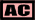

これらのマークは、そのタイムを記録した時の状況を示すものです。 上の例では、チューニングされた F355 でアシスト機能を使用したフリー走行モードで記録されたタイムであること を示しています。
 チューニングによって F355 の性能がノーマルと違うことを示します。
チューニングによって F355 の性能がノーマルと違うことを示します。
 アシスト機能をオンにして走行した場合に、このマークが表示されます。 但し、ベストタイムを記録した周回でアシスト機能を全てオフにしていても、その前後の周回で一度でもアシスト機能をオンにした場合は、 アシスト機能を使用したと見做されるので注意して下さい。
アシスト機能をオンにして走行した場合に、このマークが表示されます。 但し、ベストタイムを記録した周回でアシスト機能を全てオフにしていても、その前後の周回で一度でもアシスト機能をオンにした場合は、 アシスト機能を使用したと見做されるので注意して下さい。

 左から順に、トレーニング、フリー走行、レースのモードであることを示します。 特に、レースの場合は、スリップストリームをうまく使うことで単独走行より速いタイムを出すことが可能です。
左から順に、トレーニング、フリー走行、レースのモードであることを示します。 特に、レースの場合は、スリップストリームをうまく使うことで単独走行より速いタイムを出すことが可能です。
アーケード版「F355 Challenge 2 International Course Edition」で記録されたタイムであることを示します。